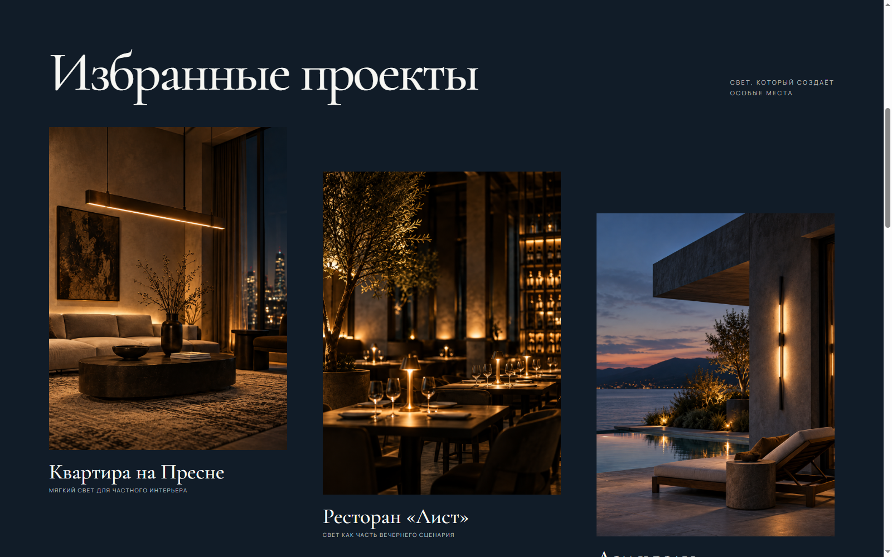
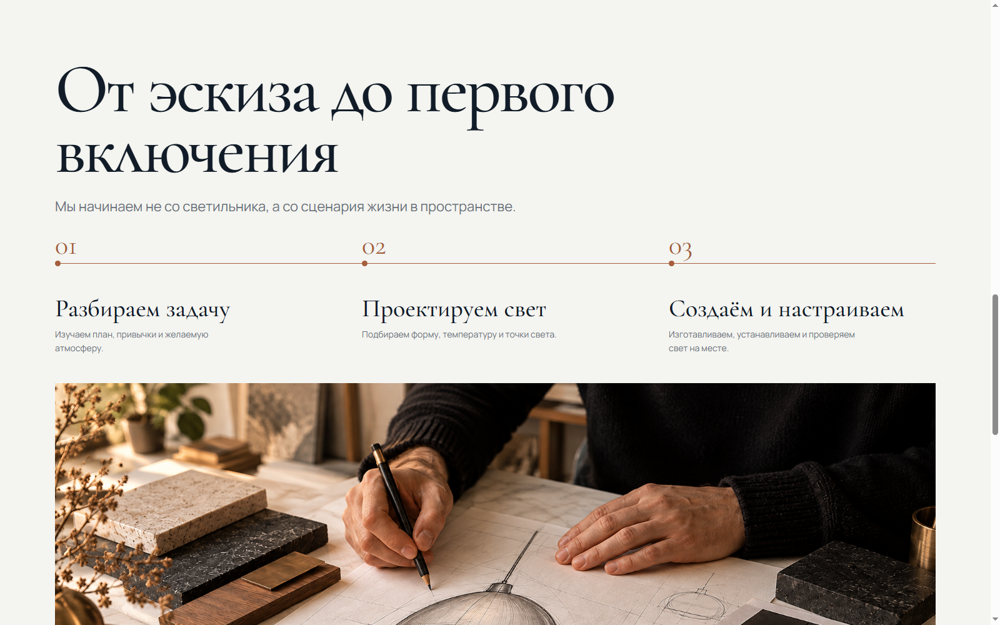
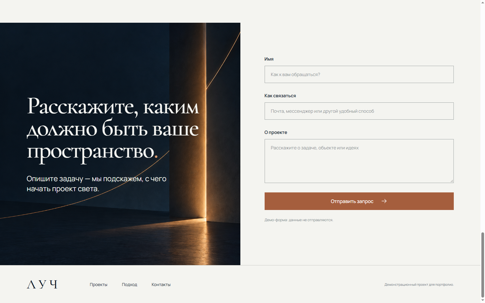
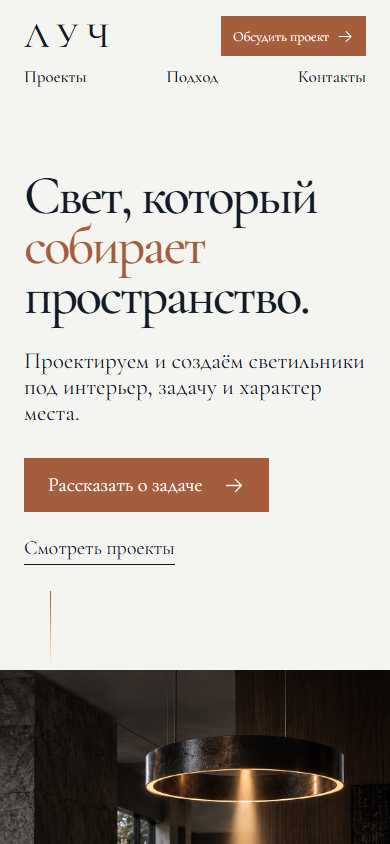
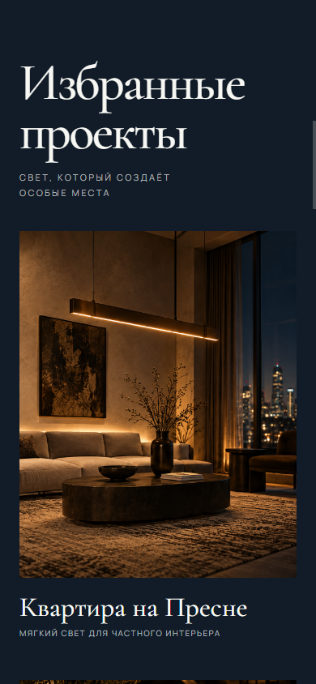

Модельный бриф · Световая мастерская
ЛУЧ. Сайт, в котором видно свет.
Лендинг для мастерской светильников на заказ: показать характер работ, объяснить подход и дать посетителю простой путь к обсуждению проекта.
Посмотреть работающий сайт
01 / Задача
Не каталог светильников. История о свете в пространстве.
По модельному брифу мастерская создаёт светильники под конкретный интерьер. Посетителю нужно быстро увидеть уровень работ, понять последовательность сотрудничества и оставить описание своей задачи.
Страница рассчитана на архитекторов и частных заказчиков. Поэтому вместо длинного перечня преимуществ — крупные фотографии света в контексте, три понятных примера и короткий путь к форме.
02 / Решение
Четыре смысловых шага



03 / Адаптация
Та же история на маленьком экране.
Секции перестраиваются в один столбец: заголовок и действие остаются первыми, фотографии сохраняют фокус, а шаги работы читаются по вертикали.
Проверить адаптивную страницу ↗

Что готово
Не только макет.
Сделаны визуальная система, адаптивная страница, навигация по разделам и демо-форма с проверкой полей. Сайт открывается локально без сборки; фотографии созданы для этого портфолио-кейса.
Открыть лендингБренд, проекты и бриф — демонстрационные. Здесь не заявлены реальные клиенты, результаты продаж или отправка заявок.